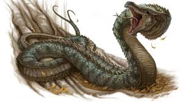

A Basilisk (or cockatrice) is a chimeric monster, born from a toad or serpent’s egg incubated under a cockerel. The terrible offspring that hatches from this egg is half-bird, half-snake, and all evil. It is one of the deadliest creatures to menace the mythological world, and it is extremely hostile towards mankind.